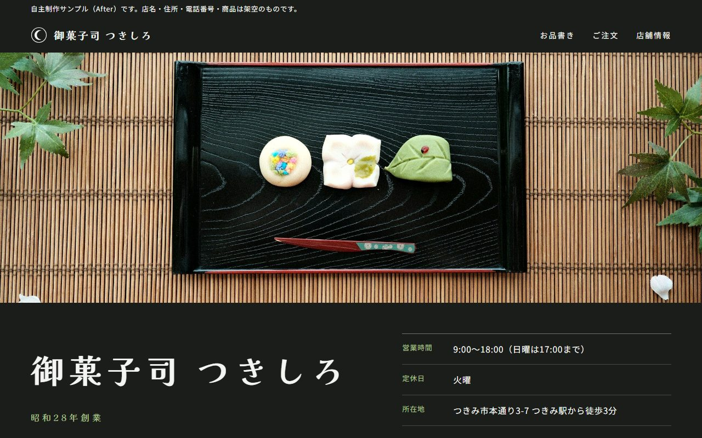

3点への入口
セットの内容
- 題材
- 昭和28年創業の和菓子店（架空）御菓子司 つきしろ
- Before の想定
- 2016年ごろに作られたホームページ表組み・情報の古さ・動かないリンクを再現しています
- After の構成
- お品書き・ご注文・店舗情報の1ページスマートフォンの幅に合わせて組み直しています
- 提案書
- A4・2ページ合計54,800円（税込）・制作期間は約2週間です
自主制作サンプルです店名・内容は架空のものです
RENEWAL PROPOSAL SET
2016年ごろに作られた想定の古いホームページと同じ店の情報で作り直したページと改善提案書（A4・2ページ）の3点です

